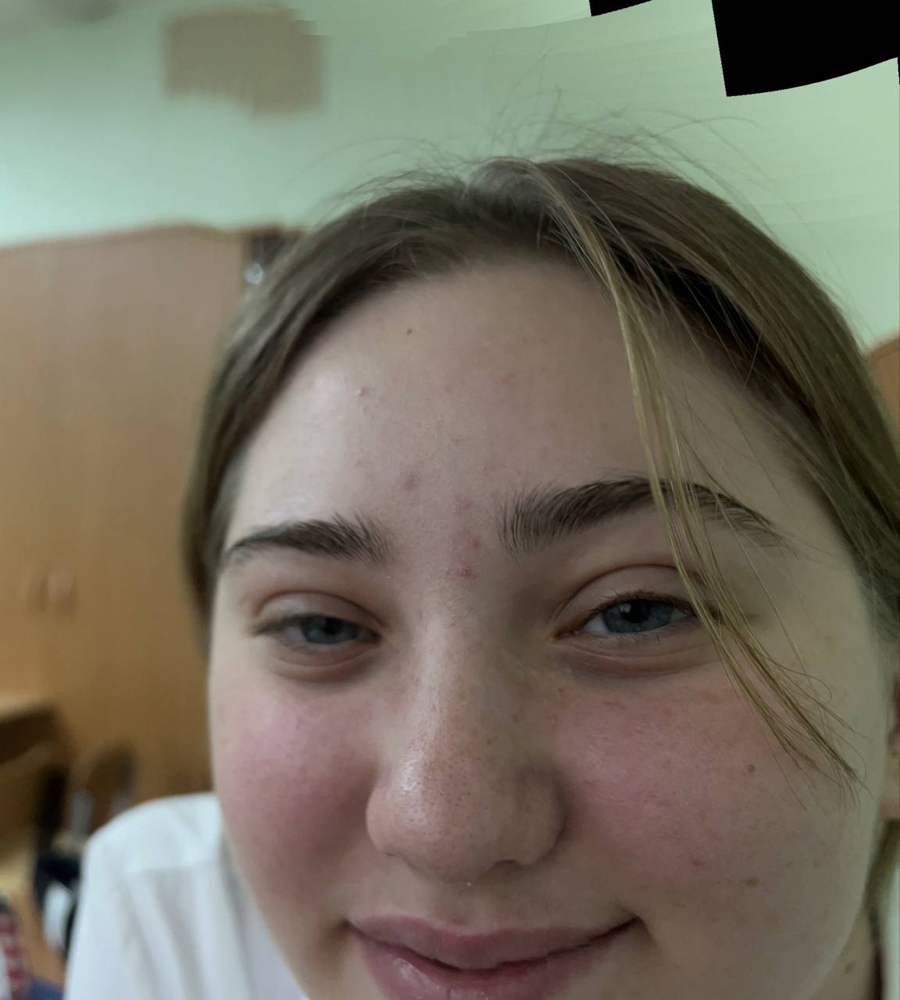

Добро пожаловать на мою личную страницу
привет, я василиса и мне 16 лет.
Обо мне
Я увлекаюсь рисованием и даже ходила в художку, так же я очень долго занималась танцами.

Это я
Факт обо мне: у меня есть кошка
Факт обо мне 2: я люблю рисовать
Факт обо мне 3: мое любимое число 6
Мои будущие цели
Я хочу заниматся творческой работой и попробовать много нового.
Спасибо, что посетили мою страницу!